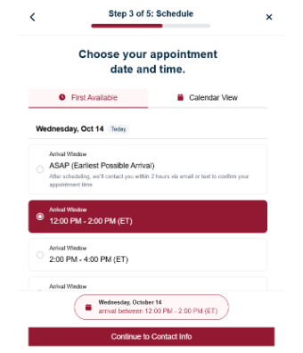
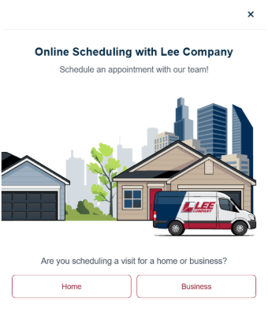

Lee Company
Turning online booking into a growth channel
Lee Company does HVAC, plumbing, electrical and appliance repair for homeowners, all on Microsoft Dynamics 365 Field Service. I designed their customer self-scheduling experience, and paid jobs through it ran at more than four times the old booking channel.
- My role: Design lead, partner
- Team: Rev3 Labs
- Status: Live

The problem
Lee's old booking channel worked, but it had plateaued. Volume was flat year over year. The flow was several steps long and didn't show availability until the end, so about 80% of people dropped off before they ever saw an open appointment. Customers couldn't cancel, reschedule or check a plan balance on their own, so dispatch and the call center handled it by hand. And the whole thing lived inside a third-party widget that blocked anything we might want to build next.
Lee wanted customers to book on their own time without adding work for the team behind the scenes.
One decision per screen
After stakeholder interviews, data analysis and lifecycle mapping, I designed the flow as a short series of single decisions, so a customer gets from "something's wrong" to a confirmed appointment without ever facing a form.
- Start with one easy question. Is this for a home or a business? That's the whole first screen.
- Describe the problem in your own words. Customers type what's wrong, or tap one of the common issues for this time of year in their area. Behind the scenes, an LLM with retrieval over Lee's service catalog clarifies the issue and picks the right kind of technician, so the customer never has to know which trade to ask for.
- Make choosing a time the easy part. First available slots up front, a calendar if you'd rather browse, clear arrival windows, and an "ASAP" option. The chosen window is played back before you continue.
- Close the loop. A summary with a reference number, then an email and reminders before the visit. Every booking lands in Dynamics as a work order, ready to dispatch.



What happened
Comparing January through July 2026 with the same window in the two prior years, self-scheduling grew across every high-volume service line. Cooling maintenance ran at 13.6x the old channel, plumbing maintenance at 10x, and HVAC, electrical and plumbing service calls each around 4x. Paid job volume more than quadrupled after two years of flat volume, and average job value stayed in the same range as before, so the growth was real volume, not cheaper jobs.
I wrote the SQL against Lee's Field Service data to get those numbers, comparing self-scheduled jobs with jobs booked the usual way on both adoption and revenue, so Lee had something better than a hunch about whether it was paying off.
Built on Dynamics 365 Field Service with Angular, Python, Azure and Azure AI Foundry.